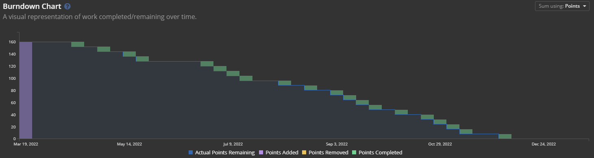

ORSC 実践コース完了したので色々まとめ
用語：
* ORSC : Organization Relationship System Coaching, システムコーチングの正式名称
* CRR Global Japan : ORSCトレーニングを実施していたり、彼ら自身もハイレベルなシステムコーチの集団
ORSC実践コースが無事終了しました。
ORSC Certificationも頂きこれにて無事全工程終了です。
後はACCの申請とか残っているけど、これはORSCとある意味無関係。
さて、今からシステムコーチングを勉強し、システムコーチになることを目指し始めた人もいるかと思います。そういった人向けにこの投稿を書いています。
システムコーチングの良さや、実践コースの精神的な厳しさを文章にするには私はまだまだ拙く、また既に目指し始めた人には良さを伝える意味もあまりないかと思い。合意的現実、実際にどれぐらいの時間がかかるのか、何をやらなければいけないのかを中心に、記録に残していこうと思います。
またあくまで私個人の視点になりますので、CRR Global Japanの公的な意見ではありませんし、全ての事象を網羅したわけでもないので、私個人が聞いたもの、見たもの、体験したものが中心になります。
実践コースまでの道のり
実践コースを受けたい！私はもうプロになる覚悟がある！という人でもいきなり実践コースから受講することは出来ません。まずは基礎コースから受講し、次に４つある応用コースを受講する必要があります。
注意しなければならないことは、これら基礎コースから応用コースは順番に受ける必要があります。
ここは非常に厳格です。また基礎コースは２日間、応用コースはそれぞれ３日間あるのですが、体調不良や他の理由で１日でも欠席すると、受講し直しになります。応用コースは半年に一回ぐらいのペースでやっているので、受講し直しになると次は半年後から再スタートとなります。
コロナ情勢次第ではありますが、オンライン、オンサイトつまり対面の２つが開催されています。私は基礎はオンライン、その他応用コースは全て対面で受講しました。本当は全部対面の予定でしたが、ぎりぎりになってコロナ情勢のため強制的にオンラインになりました。
オンラインにはオンラインの良さというか熟練者たちのオンラインの知恵が見れて良いのですが、対面の方が明らかに情報量が桁違いに多いので、エッセンスを学ぶという意味では対面をおすすめします。情報が多いというのは、五感で感じれるという意味です。運動や動きや立ったり座ったり寝転んだりといった姿勢の変化からくる情報もあります。しかしながらリスクもあります。受講前には抗原検査キットの実施が必須ですし、何かあった場合、例えばぎりぎり濃厚接触者ではないが、不安を感じる状況になった場合はPCR検査を受ける必要があります。またPCR検査の結果はすぐには出てこないので、この結果が出るまで待ってたので、対面での受講がキャンセルになった場面も見ました。私が一回も欠席することなく実践コースまで全て終われたのは単に運の問題。確率の問題だと思っています。
それぞれのトレーニング内容の超概要は、
- 基礎：基礎のワーク、ただしORSCの根幹のワーク
- 応用１：システムが変化するとは？を理解する
- 応用２：システムの中にある構造を取り扱えるようにする
- 応用３：システムから生み出される力を取り扱えるようにする
- 応用４：それらを統合し、クライアントを診断して適切なワークを提供できるようになる
ここまで私は最短で完了できたので、
- 2021年08月28-29日 : 基礎コース（オンライン）
- 2021年10月01-03日 : 応用１（対面）
- 2021年11月05-07日 : 応用２（対面）
- 2021年12月03-05日 : 応用３（対面）
- 2022年01月28-30日 : 応用４（対面）
と５ヶ月で到達しました。かなり急ぎ目のペースだったと思っています。 中には数年をかけておられる方もいました。それぞれの生活ペースもあると思うので、速いことが必ずしも良いとは限りません。
実践コースの記録
５ヶ月という長い時間をかけてようやく実践コース参加資格を得ました。
実践コースですが大人気と聞いていたので、申込みは応用４の手前に行いました。
結果として、応用４を一緒に受講した仲間が、応用４受講後に申し込もうとしたところ。人数オーバーで半年後の予約になったところを見ると、判断としては良かったのかなと思っています。
さて、応用コースを経験してる間は、応用コース大変だなと思ってたわけですが。ここからは真剣にレベルが変わります。普段の生活にシステムコーチング的な何か要素を入れたいとか、アジャイルコーチングの中に何かシステムコーチング的要素を入れたいとかでしたら応用で止めておくことをお勧めします。精神的にも肉体的にも受ける負荷のレベルが変わります。精神的な部分でいうと、個人個人受け取り方が違うので、ここでは割愛しときます。
ただ一言私の経験を置いとくと、途中で真面目に色んなものを投げ出したくなってもう後数ヶ月で終わりのところにきてたけど、勤めてる会社ごと辞めようかななんて考えた時もありました。実践コース一緒にやってた仲間に救われたので最後まで完走が出来たことは感謝してもしきれません。
さて、実践コースが始まると何があるのか？
卒業し、資格 ORSC Certification を得るためには何をしなければいけないのかをリストアップします。
- 実践コーチング 100時間
- スキルドリル・コール
- チーム・コーチング・スーパービジョン
- グループ・スーパービジョン
- 個人スーパービジョン
- コリーグ・コール
- 集中トレーニングキャンプ
- ワールドワーク・プロジェクト
なんか一杯出てきましたね。 耳慣れない言葉も色々入っています。多分一番耳慣れない「スーパービジョン」はメンターコーチが実践コース受講生のコーチングを評価し、フィードバックをしていくことを指しています。
細かい内容を書きすぎるとそれだけで長くなりそうなので、ある程度省略しながら、どういった時間が必要なのかを書いていきます。
水曜日の夜
（スキルドリル・コール / チーム・コーチング・スーパービジョン / グループ・スーパービジョン）
実践コースが始まったら水曜日の夜に予定を入れることを諦めましょう。
大体20:00-22:00が枠となっていますが、大体オーバーして22:15ぐらいまでいってしまうことが殆どです。
欠席数が多いと、資格取得要件を満たせません。一定以上の遅刻も欠席扱いになります。
ここでは上記のスキルドリルコール、チームコーチング・スーパービジョン、グループスーパービジョン を受講していきます。
それぞれ超簡単に説明すると、スキルドリルコール＝授業、チームコーチング・スーパービジョン＝ロールプレイからのスーパービジョン、グループスーパービジョン＝個人スーパービジョンに慣れるためのグループワーク。
（繰り返しますが超簡単な説明です、今は時間の確保を中心に話をしていますので、実際に受けられる価値を正確に表現していません。）
毎週２時間ぐらいは実践コース受けるなら覚悟出来ている人は多いと思います。ただし私が覚悟出来ていなかったのは、宿題の存在です。応用コースではまるっと３日間を使って学ぶので事前の資料読み込み等は必要ありませんが、実践コースの水曜日はそこで学びを最大化するために宿題が存在しています。これが地味に効いてきます。きちんと資料を読み込んだことを前提としてスピーディに授業が進むので読んでないと、置いてかれます。
コリーグ・コール
コリーグコールでは、割り当てられた学習グループ毎に決められた期間内に１時間ほど任意の時間で集まってグループワークをします。任意の時間１時間のみと考えると大したこと内容に見えますが、そこそこの頻度で発生するのが効いてきます。またそれぞれ専門分野や業態が違う業界の人達が集まってきている事が多いので、組み合わせによっては中々良い時間に予定が組めなかったりします。
そして最大のポイントはこのグループワーク、宿題が！多い！本当に多い！コリーグコールの時は宿題の時間をしっかりとることをお勧めします。
内容的には非常に面白い内容が多いので楽しいのですが、時間が足りない！
トレキャン
実践コースの時間軸は、前半・集中トレーニングキャンプ・後半となっています。このトレキャンがある月は約一ヶ月ぐらいの中間休みがあります。
中間休みのど真ん中にトレキャンがあります。これは応用コース等と同じ様に連続した３日間での対面でのキャンプになります。
何をやるのかはお楽しみですが、これをやっただけでも実践コースの価値はあったなと思うぐらい濃い内容でした。
これは３日間通した参加が卒業要件になっています。１日でも参加出来ないと、次のトレーニングキャンプへの参加が必要になります。また現在はオンラインでの参加が認められていないため、濃厚接触者になった場合は強制的に半年後の別コホートのトレーニングキャンプへの参加が必要になります。
ワールドワークプロジェクト
さてここまででも、結構生活が変わってしまうぐらいの変化があるのですが、ここからの３つはさらにドカンと生活を変化させていくものです。
ただし、このワールドワークに関して言うと、人によるかもしれません。ただ半端なワールドワークを私は見たことが無いので、結局みんな相当のリソースをワールドワークにぶっ込んでるなと感じています。
これは簡単に言うと、ORSCであなたの周りの世界を変えるプロジェクトをやって下さい。という内容です。
私が選んだテーマはLGBTQ+とシスジェンダー・ヘテロセクシャルの世界をORSCで繋ぐことを目的にスタートしました。まだまだ道半ばですが、色々な人との出会いがありました。私の人生観は確実にこのプロジェクトで変わったと断言できます。
個人スーパービジョン
個人的な実践コースの双璧の一つがこれ、水曜日の夜のところに書いたグループスーパービジョンの本番です（いやグループスーパービジョンはあれはあれで本番ですがね）。先程トレキャンのところでも書いていた時間軸ですが、前半・トレキャン・後半の前半でグループスーパービジョンをやり、後半では個人スーパービジョンをやります。
ここで今までと比べて異質なのは個人スーパービジョンには点数と落第があります。自分が行っているコーチングを録音し、その録音音声を20分切り抜き、スーパーバイザーに提出し評価をもらいます。評価は10点満点で行われ、全6回の内トップスコア3回分の平均点が６点以上になっている必要があります。全部６点以上を取る必要はないので極論、10点・5点・3点とかでもいいのですが、6点とるのもかなり苦労したので、堅実に６点を狙っていくのが良いかなと思います。
時間的には一回2時間ぐらいで6回ですが、後半になるとグループスーパービジョンが終わった関係で、水曜日が毎週コールではなく、空きもあるのでなんとかなるのですが、実際のコーチングの撮れ高と、６回のスケジュールを合わせるのがかなり至難。
また落第すると追加の個人スーパービジョンを購入する必要が出てきます。これは最後合格点を取るまで追加購入できると思います。もしかして上限があるかもしれません。私自身はぎりぎり6回目で合格できましたので追加購入は行っていません。
今書いてて気づいたのですが、時間的にはそこまできつい内容ではないかもですね。ただ精神的にはかなりきつめの内容でした。同時に自分が今曲がりなりにもシステムコーチを名乗れるのはこの個人スーパービジョンのおかげだと思っています。
100時間コーチング
さて最後の項目で、双璧のもう一つがこれになります。タイトルからかなり大変そうですよね。 100時間有料のコーチングを行い記録し提出する必要があります。 まず上記まででかなりの時間を奪われる上に100時間を奪われる事に驚きがありますよね。ただし実はこれ事前に想像していた100時間ではなかったんですよね。
まず100時間は純粋にシステムコーチングのワークをやっている時間になります。システムコーチングでは多種多様なワークつまり決められた手順のやり方があります。これらをやっている時間を合計して100時間になります。つまり普段の仕事の中でシステムコーチング的な考え方を取り入れたり、個人コーチングでシステムコーチング的なやり方を取り入れてる時間は記録されません。
またICF（国際コーチング連盟）の規定に従う必要があるので、「ここからコーチングが始まります」という宣言も必要になります。またそれに伴う契約関係も必要になりますが、これは互いの同意が必要という意味であり、必ずしも契約書が間に介在する必要はありません。ただし必要であれば契約書などの書類も用意する必要は当然あると思います。
100時間のコーチングをするための時間もかかる
プロのシステムコーチングをするということは、ワークをやる前にアセスメントつまり診断が必要になります、さらにアセスメント内容からコーチングプランの提示も必要になります。
コーチングプランはその場ですぐに出せるようなものではないので自然とアセスメントインタビューしてから数日クライアント様からお時間を頂き、その後コーチングプランの提示といった流れが必要になります。クライアント規模によってはインタビューは複数回必要だったり、重めの場合は個別にインタビューをとる場合も多いです。
そしてこれらの時間は当然100時間の中には入りません。
後当然ですが、既にシステムコーチングをやっている会社に所属、もしくはそういったビジネスパートナーが存在していない場合。システムコーチングを営業する必要があります。この営業時間も当然ながらカウントされません。
私は会社の中でも仕事が取れるようにしましたが、同時に人生で初めて個人事業主を開始し、両方から営業を行っていました。誰かの横に営業として随行していく経験はありましたが、単独で新規事業の営業を行っていくのは初めての経験で骨が折れました。
100時間を超えるための対策
計画づくり
最初のオリエンテーションで、この100時間の説明を聞き。これは腰を据えてやらないとまずいのでは？と改めて思い。もともとスクラム系のアジャイル開発者なのでツールでプロジェクトを管理しようと思い立ち、Shortcut(shortcut.com) を使用し、プロジェクト管理を開始。 100時間コーチングは後述しますが1年間の厳格な締切があります。昨今のスケジュールに足してリスキーな現状を考えると、12ヶ月ぎりぎりの計画ではなく、締切を10ヶ月として計画しました。 ちょっとスタートの準備時間をとって計算すると、二週間イテレーションで5時間ずつ終わらせていく計算になりました。計算通りに行くと10ヶ月の少し手前で終わらせることが出来ますが、間に正月期間を挟むため、大体目標どおりに行くかなと計画。
結果としては以下の通りになりました。
10ヶ月で終わらせる予定を、ほぼ8ヶ月で終わらせる事ができました。前半なかなか営業がうまくいかず、焦ってかなり営業の手を広げていたのですが、それらが後半に効いてきたというか、効き過ぎた状況で、6，7ヶ月目は土日はほぼ無い状態でコーチングを繰り返していました。正直かなり体力・精神共に削られ、週3,4回整体に行って体の調子を整えないと倒れてしまいそうでした。

ryoching.com
個人事業として「Ryoching(ryoching.com)」を開始。屋号は妻が秒で考えてくれました、感謝。 これを作ることで他の人に紹介する時も手早く情報を伝達することが出来るようになりました。
それぞれの締切
さて、全ての内容を紹介し終わりました。最後にそれぞれの締切をお伝えして終わらせようと思います。
コールエンド
実践コースはスキルドリルコールに始まり、スキルドリルコールで終わります。 最初のコールから最後のコールが約8ヶ月後にあります。私の場合は2022年03月18日開始、2022年11月30日終了。
基本的にはここで全て終了ですが、特別処置があります。特に個人スーパービジョンに関して、得点がうまく取れず追加セッションを計画していたり、たまたま撮れ高の問題で６回目が時間内に間に合わなかったりといった理由は申請すれば基本的には許可されると思いますが、基準はCRR Global Japanが握っているので、できるだけコールエンドに間に合わせましょう。私自身は全部コールエンドに間に合っていたので、延長申請は出していません。
100時間コーチング締切
100時間コーチングだけは別の締切があります。またこの締切はかなり厳格なものになります。きっちり1年間で延長はほぼ認められません。私の場合は 2022年03月19日に開始し、2023年03月18日23時59分59秒に終了でした。
厳格な理由は、この100時間コーチングは以下３社の合意のもと設定されていることが原因になっているようです。
- CRR Global Japan (実践コースを日本で提供している会社)
- CRR Global (システムコーチングの総本山)
- ICF (国際コーチング連盟、システムコーチング以外の全てのコーチングの連盟)
なので期限の延長をするためには、これら3社が納得する必要があるので、過去認めれらたのは内戦問題とかそういったレベルでのコーチング不可の状態のみだそうです。
以上！
かなり長くだらだらと書きましたが、これからORSC、システムコーチングを目指す人の何かに役に立てばいいなと思います。「ORSC実践コース受けようと思うのですが、何をしたらいいですか？」という質問を時々貰いますが、私が言えるのは「余裕を作っておけ！仕事を暇にしとけ！」ぐらいです。覚悟に関しては実践コースに行こうとしている人なら決まっていると思うのでそこは言うまでもなく。
最後に実践コースを通して素晴らしい内容でした。不平不満がゼロなわけではありませんが、そんなものがどうでも良くなるぐらい価値のあるコースでした。このコースを提供してくれた CRR Global Japan を支える人たちに感謝します。